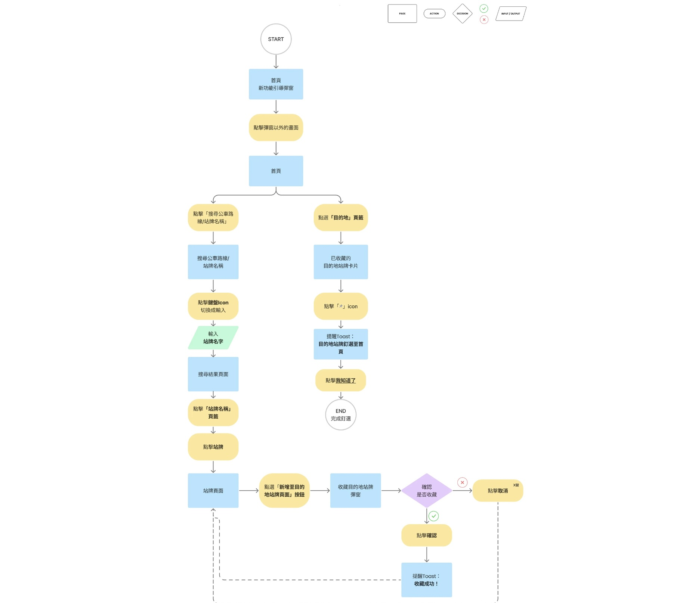

AAPD Product Design Challenge, Merit Award
AAPD challenge is a product designing challenge where each group chooses one existing app / platform out of three, and proceeds to optimize it in ways of user centered designing.
The three app / platform choices are Bus+, Teachify, SWAP. As a group of beginners who are trying to improve user related skills within this short period of time, we chose Bus+, an app we all used or are familiar with to some extent.
Research Methods + Findings
First, we conducted a pre-pilot in an attempt to get a grip of what preferences or difficulties users of different bus apps have. We then followed up with a questionnaire and later on an in-depth interview session to cover both quantitative and qualitative side of a research. It appears that the two biggest issues users have when using Bus+ app now is:
1/ The lack of efficiency when looking for needed information to take a bus or other public transportation , mainly caused by an overly complicated interface, especially on the home page
2/ How users never use the Route Planning feature mainly because there’s already Google Map which functions well enough for most users
Design Strategy
After user research was done, we aligned the outcome with the core business value that Bus+ Team emphasized, and came up with the design strategy to improve the overall interface and its unique feature, Bus Stop Collection. This feature allows users to add their usual stops from specific bus lanes to their designated categories, and users could name different groups and arrange categories by themselves. According to Bus+ Team, the more a user is using this feature, the higher retention rate this user has, which echoes the Bus+ Team’s emphasis on this feature’s business value.
Stops Collection Feature
What type of users find this feature useful?
As mentioned previously, Stops Collection allows users to add stops from specific bus lanes in their designated category. To be specific, users add their usual bus taken from their usual starting stops (where they get ON the bus) to their collection, which means this feature is useful only to those who take the same buses at the same spots regularly. For those who don't have usual starting points, it's quite useless.
Therefore, to follow the strategy above and in aims of expanding the user base, we proposed a new feature related to Stops Collection but with the opposite function.
New Feature
The feature we proposed allows users to add their destination stops to the collection, and this will collect the stops, instead of specific bus lanes. This means that users with usual destinations could now easily look up how to get there by just selecting the destination stops they had saved to their own category, saving both time and steps compared to previous features. Combining the existing Stops Collection feature and this new Destination Stops feature, the app could meet more variability of needs, successfully expanding the user base.
Personal Achievement
In this team, everyone discussed all topics together, and coworked on almost everything as well, but I focused more on the user research, UX design and UI design. Also, as the team leader, I successfully manage the time schedule, coordinate team meetings and act as a responsible contact person throughout the challenge.
Award
☙ Merit Award ❧
☙ Popularity Award ❧